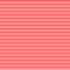

SKIPPY - Read and write GIF files with Common Lisp
Abstract
GIF is a widely-supported indexed color image file format. SKIPPY is a Common Lisp library that supports reading GIF87a and GIF89a files and writing GIF89a files. SKIPPY supports images with animations, transparency, comments, and other GIF features. SKIPPY is written fully in Common Lisp and does not use an external library to read or write image files. It is available under a BSD-like license. The latest version is 1.3.12, released on March 12th, 2015.
The canonical location for SKIPPY is http://www.xach.com/lisp/skippy/. Development is on github.
SKIPPY is used by wigflip.
Download shortcut: http://www.xach.com/lisp/skippy.tgz
Contents
- Limitations
- Concepts
- Examples
- Dictionary
- Feedback
Limitations
- Raster data is represented very simply, with a limited number of pre-defined operations on it
- No interface available for writing out files incrementally; they must be completely defined in memory, and then written
Alternatives:
- CL-GD is a Common Lisp interface to Thomas Boutell's GD graphics library. It includes a high-level interface to loading, creating, and manipulating images.
- IMAGO is an image manipulation library in Common Lisp. It supports compositing, several types of drawing, scaling, filters, and more.
- ch-image is an image representation and processing library.
- Poly-pen is a graphics library with high-level operations and multiple backends.
Concepts
A GIF89a file consists of a data stream which contains zero or more images (although zero images wouldn't be very useful). In addition to images, the data stream contains metadata such as the logical dimensions of the overall image and an optional global color table. Images contain the actual raster data that is displayed in a graphics viewer, and may also be associated with metadata such as a transparent color index, a local color table, and animation control information.
For more information about the GIF89a file format, see the GIF89a Specification.
Creating a GIF file with SKIPPY is a three-part process:
- Create a data stream
- Add zero or more images to the data stream
- Write the data stream out to a file
Examples
;;; Create an image filled with horizontal red stripes
(use-package '#:skippy)
(defun example1 ()
(let* ((height 100)
(width 100)
(data-stream (make-data-stream :height height
:width width
:color-table t))
(image (make-image :height height :width width))
(red (ensure-color (rgb-color #xFF #x00 #x00)
(color-table data-stream)))
(white (ensure-color (rgb-color #xFF #xFF #xFF)
(color-table data-stream))))
(add-image image data-stream)
(fill (image-data image) white)
(dotimes (i (truncate height 2))
(let* ((start (* i width 2))
(end (+ start width)))
(fill (image-data image) red :start start :end end)))
(output-data-stream data-stream #p"example1.gif")))
;;; Make a small "sprite" move across an image
(use-package '#:skippy)
(defun example2 ()
(let* ((height 9)
(width 99)
(color-table (make-color-table))
(data-stream (make-data-stream :height height
:width width
:color-table color-table))
(gray (ensure-color #xCCCCCC color-table))
(white (ensure-color #xFFFFFF color-table))
(black (ensure-color #x000000 color-table))
(bg (make-image :data-stream data-stream
:width width :height height
:image-data (make-image-data height width
:initial-element gray)))
(sprite-data (make-image-data 3 3)))
(flet ((hatch-data (data color1 color2)
(dotimes (i (length data))
(setf (aref data i) (if (zerop (mod i 2)) color1 color2)))))
(hatch-data sprite-data white black)
(hatch-data (image-data bg) white gray)
(dotimes (i 96)
(let ((image (make-image :height 3
:width 3
:image-data sprite-data
:delay-time 10
:disposal-method :restore-previous
:transparency-index white
:top-position 3
:left-position i)))
(add-image image data-stream)))
(setf (loopingp data-stream) t)
(output-data-stream data-stream #p"example2.gif"))))
;;; Overlapping rectangles of random colors
(use-package '#:skippy)
(defun example3 ()
(let* ((height 100)
(width 100)
(color-count 256)
(color-table (make-color-table))
(data-stream (make-data-stream :color-table color-table
:loopingp t
:height height
:width width)))
(dotimes (i color-count)
(add-color (rgb-color (random 256) (random 256) (random 256))
color-table))
(dotimes (i color-count)
(let* ((top (random height))
(left (random width))
(h (1+ (random (- height top))))
(w (1+ (random (- width left))))
(image (make-image :height h
:width w
:data-stream data-stream
:top-position top
:left-position left
:image-data (make-image-data w h
:initial-element (random color-count))
:delay-time 5)))
(add-image image data-stream)))
(output-data-stream data-stream #p"example3.gif")))
Dictionary
The following symbols are exported from the SKIPPY
package.
Color Tables
Color tables are used to store a mapping between a small (<256) numerical index and the actual the color used when displaying an image. There may be one global color table stored in the data stream. Each image may also have its own local color table. If an image does not have a local color table, the global color table must be present for the GIF file to be written.
In SKIPPY, colors are designated by 24-bit unsigned integers. The top 8 bits represent the red component, the middle 8 bits represent the blue component, and the bottom 8 bits represent the green component. For example, interpreted as a color, the Lisp literal #xFFFFFF has a red component of #xFF or 255, a green component of #xFF, and a blue component of #xFF. Together, these three components make white.
The function RGB-COLOR makes it easy to construct colors from their individual components.
[Function]
rgb-color red green blue => color
Returns a 24-bit number representing the color with the numeric color components red, green, and blue.
[Function]
color-rgb color => red, green, blue
Returns the RGB color components of color as multiple values
[Function]
make-color-table &key initial-contents
=> color-table
Creates and returns a new color table. The colors in the list initial-contents, if any, are added to the table in order as if with ADD-COLOR.
[Function]
add-color color color-table => index
Adds color to color-table and returns the new color's index. Indexes start at 0 and increase sequentially. If the color table already has the maximum number of entries (256), an error is signaled.
[Function]
find-color color color-table => index
If color is present in color-table, returns its index, otherwise returns nil.
[Function]
ensure-color color color-table => index
If color is present in color-table, returns its existing index, otherwise adds color and returns the new index. Essentially a combination of FIND-COLOR and, if necessary, ADD-COLOR.
[Function]
color-table-size color-table => size
Returns the number of entries in color-table.
[Accessor]
color-table-entry color-table index =>
color
(setf (color-table-entry color-table index)
color) => color
Gets or sets the color at index in color-table.
[Function]
copy-color-table color-table => new-color-table
Returns a copy of color-table.
Data Streams
Data streams are the containers for images and other metadata.
The height and width of the data stream should be as large as or larger than the height and width of any image it contains; some software will not display the resulting images otherwise.
[Function]
make-data-stream &key
height width
color-table loopingp
comment initial-images
=> data-stream
Creates and returns a new data stream object.height and width are required and represent the logical dimensions of the displayed image.
color-table represents the global color table, and may be one of: NIL, meaning that there is no global color table; T, designating an automatically created new color table; or an existing color table object.
If loopingp is non-NIL, the frames in the image will redisplay from the beginning after reaching the end.
If comment is non-NIL, it should be a string to be used as an embedded comment in the output file.
All images in the list initial-images are added to the new data stream as if with ADD-IMAGE.
[Function]
add-image image data-stream => |
Adds image to data-stream.
[Function]
output-data-stream data-stream file
&key (if-exists :supersede) =>
pathname
Writes data-stream in GIF89a format to file and returns the truename of file. if-exists may be any of the values accepted by the :IF-EXISTS argument to CL:OPEN.
[Function]
write-data-stream data-stream stream => |
Writes data-stream in GIF89a format to stream and returns no value. The stream should accept (UNSIGNED-BYTE 8) data via CL:WRITE-BYTE and CL:WRITE-SEQUENCE.
[Function]
load-data-stream file => data-stream
Reads GIF data from file and returns a SKIPPY data stream object. Some caveats apply:
- If multiple comments are present in the file, only the last comment is saved in the resulting data stream
- All GIF Plain Text Extension blocks are silently ignored (however, no software actually supports the Plain Text Extension anyway)
[Function]
read-data-stream stream => data-stream
Reads a GIF89a or GIF87a data stream from stream and returns it as a SKIPPY data stream object. The stream should be compatible with reading (UNSIGNED-BYTE 8) data via CL:READ-BYTE and CL:READ-SEQUENCE.
[Function]
images data-stream => image-vector
Returns a vector containing the images present in data-stream.
[Functions]
width data-stream => width
height data-stream => height
Returns the width and height of data-stream, respectively.
[Accessors]
color-table data-stream => color-table
loopingp data-stream => boolean
comment data-stream => string
Accessors; get or set the respective properties of data-stream. See MAKE-DATA-STREAM for more details.
[Function]
last-image data-stream => image
Returns the last image of data-stream, or NIL if the data stream does not have any images.
[Function]
add-delay delay data-stream => new-delay
Increments the DELAY-TIME of the last image in data-stream by delay hundredths of a second, and returns the new value.This has the effect of adding a pause to the current point in the animation.
If there are no images in data-stream, returns NIL and has no effect.
Images
Images contain the actual raster data that is displayed when viewing a GIF. If there is more than one image in a data stream, they are displayed in sequence as an animation.
Images may be smaller than the logical dimensions of the data stream. They may also be placed at arbitrary offsets from the top and left of the logical screen.
Image data is stored as a one-dimensional vector of color table indexes. The first element in the vector corresponds to the upper-left corner of the image, and the last element in the vector corresponds to the lower-right corner of the image. The canvas functions make it easier to treat an image as a two-dimensional array of pixels.
[Special variable]
*default-delay-time* => 100
The default value for the DELAY-TIME of an image, in hundredths of a second. The initial value is 100.
[Function]
make-image &key
height width
image-data
data-stream
top-position left-position
color-table
interlacedp
delay-time
transparency-index
disposal-method => image
Creates and returns a new image object.height and width represent the dimensions of the image.
image-data, if supplied, should be a vector with (* width height) elements of type (unsigned-byte 8). If image-data is not supplied, a new vector of the appropriate size and type is created for the image automatically.
data-stream, if supplied, is the data stream which contains the image.
top-position and left-position, if supplied, are the offsets from the top and left of the logical screen at which this image is displayed. If not provided, a default of 0 is used.
color-table represents the local color table, and may be one of: NIL, meaning that there is no local color table; T, designating an automatically created new color table; or an existing color table object.
If interlacedp is non-NIL, the image data will be written out with the rows interlaced. See Appendix E of the GIF89a specification for more information.
delay-time is the time, in hundredths of a second, to display this image before displaying the next image in the data stream. If not provided, the value of *DEFAULT-DELAY-TIME* is used.
If specified, the color at transparency-index will not be displayed if it is present in the image raster data; instead, any pixel with that index will be transparent.
disposal-method is the way the image is updated when the next image in the data stream is to be displayed. Possible values are:
- :UNSPECIFIED - Do not erase the image from the display when displaying the next frame. This is the default value if disposal-method is not supplied.
- :NONE - Do not erase the image.
- :RESTORE-BACKGROUND - The image is removed and the background is made visible.
- :RESTORE-PREVIOUS - The image is removed and the previous state of the logical image is restored.
[Functions]
width image => width
height image => height
Returns the width and height of image, respectively.
[Accessors]
image-data image => image-data
top-position image => top-position
left-position image => left-position
color-table image => color-table
interlacedp image => boolean
disposal-method image => disposal-method
delay-time image => delay-time
transparency-index image => index
Accessors; get or set the respective properties of image. See MAKE-IMAGE for more details.
[Function]
make-image-data width height
&key (initial-element 0) initial-contents
=> image-data
Returns a vector suitable for use as an image's image-data.
Canvases
Canvases are similar to images, but they do not have GIF-specific metadata. They contain only information about their dimensions and a vector of raster data.
Most functions that operate on canvases also operate on images.
[Function]
make-canvas &key height width
image-data => canvas
Creates and returns a new canvas object.height and width are required.
image-data, if supplied, should be a vector with (* width height) elements of type (unsigned-byte 8). If image-data is not supplied, a new vector of the appropriate size and type is created for the canvas automatically.
[Functions]
width canvas => width
height canvas => height
Returns the width and height of canvas, respectively.
[Accessor]
pixel-ref canvas x y => index
(setf (pixel-ref canvas x y) index) => index
Gets or sets the color table index at position x,y in canvas.
[Function]
canvas-image canvas => image
Creates an image object that has the same dimensions as canvas and which shares the canvas's image-data. That is, any updates to the image-data of image or canvas will operate on the same data.
[Function]
composite source dest
&key
(sx 0) (sy 0)
(dx 0) (dy 0)
width height =>
Copies the region of source starting at position sx,sy to dest at position dx,dy.If width and height are given, they place a bounds on the total size of the copied region. They default to the width and height of the source image.
Compositing will do the necessary clipping to ensure that the right portion of source ends up in dest. This includes compositing into negative destination positions and from negative source positions.
[Function]
fill-canvas canvas index =>
Fills the entire area of canvas with the color index index.
[Function]
clone canvas => new-canvas
Creates a copy of canvas with the same dimensions and a copy of the image data.
[Function]
rotate-180 canvas => canvas
Destructively performs a 180-degree rotation of the image data of canvas.
[Function]
flip-horizontal canvas => canvas
Destructively horizontally mirrors the image data of canvas.
[Function]
flip-vertical canvas => canvas
Destructively vertically mirrors the image data of canvas.
[Function]
scale canvas scale-factor => new-canvas
Scales canvas by the integer scale-factor and returns the result as a new canvas.Does not work on image objects.
[Function]
fill-area canvas index
&key
(x 0) (y 0)
width height =>
Fills an area of canvas starting at position x,y.
Warnings and Conditions
[Condition type]
skippy-warning
This condition type is a subtype of CL:WARNING. All warnings signaled by Skippy are a subtype of this type.
[Condition type]
skippy-error
This condition type is a subtype of CL:ERROR. All errors signaled by Skippy are a subtype of this type.
[Condition type]
lzw-error
An error of this type is signaled from LOAD-DATA-STREAM or READ-DATA-STREAM when the LZW data is corrupted in some way.
[Condition type]
unexpected-value
An error of this type is signaled from LOAD-DATA-STREAM or READ-DATA-STREAM when an unexpected value is encountered.
[Condition type]
missing-color-table
An error of this type is signaled from OUTPUT-DATA-STREAM or WRITE-DATA-STREAM when an image being compressed has neither a local color table nor a global color table.
[Condition type]
color-table-full
An error of this type is signaled from ADD-COLOR or ENSURE-COLOR when a new color must be added but the color table already has the maximum number of entries (256).
[Condition type]
signature-error
All GIF files start with the ASCII strings "GIF87a" or "GIF89a". An error of type signature-error is signaled from LOAD-DATA-STREAM or READ-DATA-STREAM when no signature is present or the octets in the input stream do not match either signature.
Feedback
Please send bug reports, patches, questions, and any other feedback to Zachary Beane.
Thanks to Eric Marsden for finding and sharing unsupported, bogus, and corrupted GIFs so I could make Skippy handle them.
Thanks to Martin Rydström and Ignas Mikalajunas for reviewing this documentation and offering helpful advice.